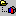

Project Explorer, Explore Current Project (Tools Menu) |
  
|
Project Explorer, Explore Current Project (Tools Menu) |
|
Project Explorer (displays multiple projects):
Icon: . Keyboard Shortcut: ALT, T, P
Explore Current Project (displays current project only):
Icon:

. Keyboard Shortcut: ALT, T, EDisplays a Project Explorer window, where a tree view of one or more projects can be viewed, data can be copied, rooms can be created, and existing rooms can be moved to other zones or systems. The Project Explorer window lets you copy and paste systems and rooms similarly to the way that you copy and paste files using the familiar Windows Explorer.
Most toolbar buttons are self-explanatory and are not described here.
Projects: [Number]: This toolbar button shows the number of projects being shown in the list. To change the maximum number of projects allowed, click the button and enter a new number. If the number of projects in the current projects folder exceeds the maximum number allowed in the Project Explorer, the Too Many Files for Project Explorer window will open.
Drag and Drop Rooms: Rooms can be copied or moved from one system or zone to another by drag and drop. If you drag a room from another project into the current one, the room will be copied. If you drag a room within the same project to another system or zone, it will be a move, but if you hold down the Ctrl key while dragging the room it will be copied. Drag and drop can be done either within the same Project Explorer window, or from the multi-project explorer to the single-project explorer and vice-versa.
Follow these steps to create the rooms of a project using the Project Explorer:
1.Open a new project.
2.If a Project Explorer window is not open, click the menu "Tools|Explore Current Project".
3.On the Project Explorer window, click the building icon: .
4.On the Project Explorer toolbar, click the "Add System Node" button , or right click on the building icon and click "Add System Node".
5.Click the newly created system icon in the Project Explorer: .
6.On the Project Explorer toolbar, click the "Add Zone Node" button , or right click on the system icon and click "Add Zone Node".
7.Click the newly created zone icon in the Project Explorer: .
8.On the Project Explorer toolbar, click the "Add New Room To Zone" button , or right click on the zone icon and click "Add New Room To Zone".
9.Add the rest of the systems, zones and rooms by following the same procedure. Data can be copied from one room to another and from one system to another with the copy and paste items that appear in the right click menus and in the Project Explorer toolbar.